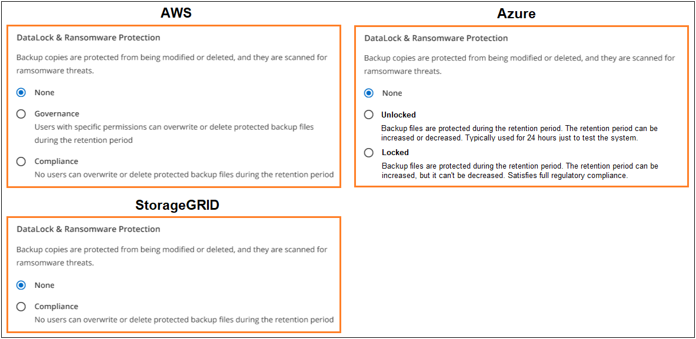

Release notes
Release notes
BlueXP backup and recovery policy configuration settings
 Suggest changes
Suggest changes
BlueXP backup and recovery enables you to create backup policies with a variety of configuration settings for your on-prem ONTAP and Cloud Volumes ONTAP systems.

|
These policy settings are relevant for backup to object storage only. None of these settings affect your Snapshot or replication policies. Similar policy settings for Snapshots and replications will be added in the future. |
Backup schedules
BlueXP backup and recovery enables you to create multiple backup policies with unique schedules for each working environment (cluster). You can assign different backup policies to volumes that have different recovery point objectives (RPO).
Each backup policy provides a section for Labels & Retention that you can apply to your backup files. Note that the Snapshot policy applied to the volume must be one of the policies recognized by BlueXP backup and recovery or backup files will not be created.

There are two parts of the schedule; the Label and the Retention value:
-
The label defines how often a backup file is created (or updated) from the volume. You can select among the following types of labels:
-
You can choose one, or a combination of, hourly, daily, weekly, monthly, and yearly timeframes.
-
You can select one of the system-defined policies that provide backup and retention for 3 months, 1 year, or 7 years.
-
If you have created custom backup protection policies on the cluster using ONTAP System Manager or the ONTAP CLI, you can select one of those policies.
-
-
The retention value defines how many backup files for each label (timeframe) are retained. Once the maximum number of backups have been reached in a category, or interval, older backups are removed so you always have the most current backups. This also saves you storage costs because obsolete backups don't continue to take up space in the cloud.
For example, say you create a backup policy that creates 7 weekly and 12 monthly backups:
-
each week and each month a backup file is created for the volume
-
at the 8th week, the first weekly backup is removed, and the new weekly backup for the 8th week is added (keeping a maximum of 7 weekly backups)
-
at the 13th month, the first monthly backup is removed, and the new monthly backup for the 13th month is added (keeping a maximum of 12 monthly backups)
Note that Yearly backups will be deleted automatically from the source system after being transferred to object storage. This default behavior can be changed in the Advanced Settings page for the Working Environment.
DataLock and Ransomware protection
BlueXP backup and recovery provides support for DataLock and Ransomware protection for your volume backups. These features enable you to lock your backup files and scan them to detect possible ransomware on the backup files. This is an optional setting that you can define in your backup policies when you want extra protection for your volume backups for a cluster.
Both of these features protect your backup files so that you'll always have a valid backup file to recover data from in case of a ransomware attack attempt on your backups. It's also helpful to meet certain regulatory requirements where backups need to be locked and retained for a certain period of time. When the DataLock and Ransomware Protection option is enabled, the cloud bucket that is provisioned as a part of BlueXP backup and recovery activation will have object locking and object versioning enabled.
This feature does not provide protection for your source volumes; only for the backups of those source volumes. Use NetApp Cloud Insights and Cloud Secure, or some of the anti-ransomware protections provided from ONTAP to protect your source volumes.

|
|
What is DataLock
DataLock protects your backup files from being modified or deleted for a certain period of time - also called immutable storage. This functionality uses technology from the object storage provider for "object locking." The period of time that the backup file is locked (and retained) is called the DataLock Retention Period. It is based on the backup policy schedule and retention setting that you defined; plus a 14-day buffer. Any DataLock retention policy that is less than 30 days is rounded up to 30 days minimum.
Be aware that old backups are deleted after the DataLock Retention Period expires, not after the backup policy retention period expires.
Let's look at some examples of how this works:
-
If you create a Monthly backup schedule with 12 retentions, each backup is locked for 12 months (plus 14 days) before it is deleted.
-
If you create a backup policy that creates 30 daily, 7 weekly, 12 monthly backups there will be three locked retention periods. The "30 daily" backups would be retained for 44 days (30 days plus 14 days buffer), the "7 weekly" backups would be retained for 9 weeks (7 weeks plus 14 days), and the "12 monthly" backups would be retained for 12 months (plus 14 days).
-
If you create an Hourly backup schedule with 24 retentions, you might think that backups are locked for 24 hours. However, since that is less than the minimum of 30 days, each backup will be locked and retained for 44 days (30 days plus 14 days buffer).
You can see in this last case that if each backup file is locked for 44 days, you'll end up with many more backup files than would typically be retained with an hourly/24 retentions policy. Usually, when BlueXP backup and recovery creates the 25th backup file it would delete the oldest backup to keep the maximum retentions at 24 (based on the policy). The DataLock retention setting overrides the policy retention setting from your backup policy in this case. This could affect your storage costs as your backup files will be saved in the object store for a longer period of time.
What is Ransomware protection
Ransomware protection scans your backup files to look for evidence of a ransomware attack. The detection of ransomware attacks is performed using a checksum comparison. If potential ransomware is identified in a new backup file versus the previous backup file, that newer backup file is replaced by the most recent backup file that does not show any signs of a ransomware attack. (The file that was identified as having a ransomware attack is deleted 1 day after it has been replaced.)
Ransomware scans happen at 3 points in the backup and restore process:
-
When a backup file is created
The scan is not performed on the backup file when it is first written to cloud storage, but when the next backup file is written. For example, if you have a weekly backup schedule set for Tuesday, on Tuesday the 14th a backup is created. Then on Tuesday the 21st another backup is created. The ransomware scan is run on the backup file from the 14th at this time.
-
When you attempt to restore data from a backup file
You can choose to run a scan before restoring data from a backup file, or skip this scan.
-
Manually
You can run an on-demand ransomware protection scan at any time to verify the health of a specific backup file. This can be useful if you've had a ransomware issue on a particular volume and you want to verify that the backups for that volume are not affected.
DataLock and Ransomware Protection settings
Each backup policy provides a section for DataLock and Ransomware Protection that you can apply to your backup files.

You can choose from the following settings for each backup policy:
-
None (Default)
DataLock protection and ransomware protection are disabled.
-
Unlocked
Backup files are protected during the retention period. The retention period can be increased or decreased. Typically used for 24 hours to test the system. Ransomware protection is enabled.
-
Locked
Backup files are protected during the retention period. The retention period can be increased, but it can't be decreased. Satisfies full regulatory compliance. Ransomware protection is enabled.
-
None (Default)
DataLock protection and ransomware protection are disabled.
-
Compliance
DataLock is set to Compliance mode where no users can overwrite or delete backup files during the retention period. Ransomware protection is enabled.
Supported working environments and object storage providers
You can enable DataLock and Ransomware protection on ONTAP volumes from the following working environments when using object storage in the following public and private cloud providers. Additional cloud providers will be added in future releases.
| Source Working Environment | Backup File Destination |
|---|---|
Cloud Volumes ONTAP in Azure |
Azure Blob |
On-premises ONTAP system |
Azure Blob |
Requirements
-
For Azure:
-
Your clusters must running ONTAP 9.12.1 or greater
-
The Connector can be deployed in the cloud or on your premises
-
-
For StorageGRID:
-
Your clusters must running ONTAP 9.11.1 or greater
-
Your StorageGRID systems must be running 11.6.0.3 or greater
-
The Connector must be deployed on your premises (it can be installed in a site with or without internet access)
-
The following S3 permissions must be part of the IAM role that provides the Connector with permissions:
-
s3:GetObjectVersionTagging
-
s3:GetBucketObjectLockConfiguration
-
s3:GetObjectVersionAcl
-
s3:PutObjectTagging
-
s3:DeleteObject
-
s3:DeleteObjectTagging
-
s3:GetObjectRetention
-
s3:DeleteObjectVersionTagging
-
s3:PutObject
-
s3:GetObject
-
s3:PutBucketObjectLockConfiguration
-
s3:GetLifecycleConfiguration
-
s3:GetBucketTagging
-
s3:DeleteObjectVersion
-
s3:ListBucketVersions
-
s3:ListBucket
-
s3:PutBucketTagging
-
s3:GetObjectTagging
-
s3:PutBucketVersioning
-
s3:PutObjectVersionTagging
-
s3:GetBucketVersioning
-
s3:GetBucketAcl
-
s3:PutObjectRetention
-
s3:GetBucketLocation
-
s3:GetObjectVersion
-
-
Restrictions
-
The DataLock and Ransomware protection feature is not available if you have configured archival storage in the backup policy.
-
The DataLock option you select when activating BlueXP backup and recovery must be used for all backup policies for that cluster.
-
You cannot use multiple DataLock modes on a single cluster.
-
If you enable DataLock, all volume backups will be locked. You can't mix locked and non-locked volume backups for a single cluster.
-
DataLock and Ransomware protection is applicable for new volume backups using a backup policy with DataLock and Ransomware protection enabled. You can't enable this feature after BlueXP backup and recovery has been activated.
-
FlexGroup volumes can use DataLock and Ransomware protection only when using ONTAP 9.13.1 or greater.
Archival storage settings
When using AWS, Azure, or Google cloud storage, you can move older backup files to a less expensive archival storage class or access tier after a certain number of days. You can also choose to send your backup files to archival storage immediately without being written to standard cloud storage. Just enter 0 as the "Archive After Days" to send your backup file directly to archival storage. This can be especially helpful for users who rarely need to access data from cloud backups or users who are replacing a backup to tape solution.
Data in archival tiers can't be accessed immediately when needed, and will require a higher retrieval cost, so you'll need to consider how often you may need to restore data from backup files before deciding to archive your backup files.
|
|
|
Each backup policy provides a section for Archival Policy that you can apply to your backup files.

-
In Azure, backups are associated with the Cool access tier.
If your cluster is using ONTAP 9.10.1 or greater, you can tier older backups to Azure Archive storage. Learn more about Azure archival storage.
-
In StorageGRID, backups are associated with the Standard storage class.
If your on-prem cluster is using ONTAP 9.12.1 or greater, and your StorageGRID system is using 11.4 or greater, you can archive older backup files to public cloud archival storage.
-
For Azure, you can tier older backups to Azure Archive storage. Learn more about Azure archival storage.
-